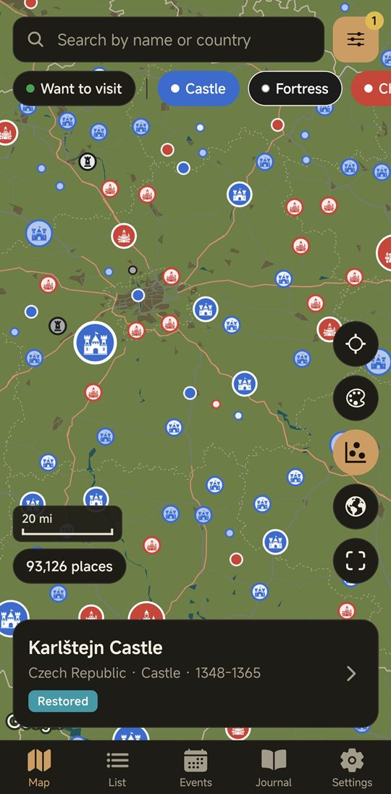
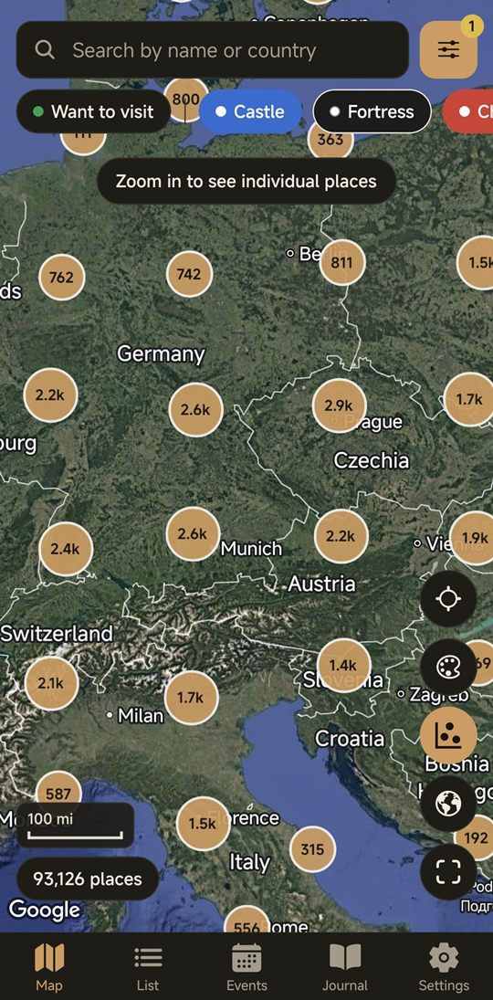
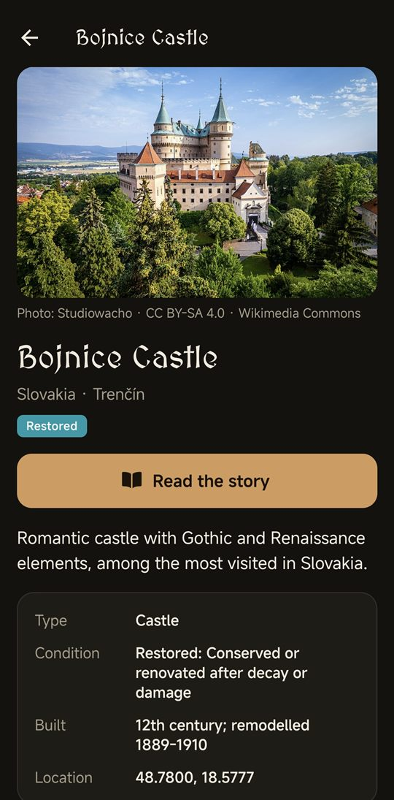

Burgen, Schlösser, Festungen und antike Stätten auf einer Karte
Markieren Sie die Orte, die Sie besucht haben, lesen Sie ihre Geschichte und führen Sie Ihr eigenes Burgentagebuch. Keine Werbung, kein Konto, kein Tracking.
Android-App. Kostenlos bei Google Play.
- 93.000+Orte
- 190Länder
- 14Sprachen
- 0Werbung und Konten
Was Eldoria kann
Eine Karte, sechs Arten von Orten
Burgen, Festungen, Schlösser und Paläste, Herrenhäuser, historische Städte und Dörfer, antike Stätten. Filtern Sie nach Art, Land, Zustand, UNESCO-Welterbe und besuchten Orten. Die Karte zeigt zunächst Burgen und Festungen; weitere Arten fügen Sie in den Filtern hinzu.
Eine Karte im Pergamentstil
Beim Herauszoomen werden Orte in nummerierten Blasen zusammengefasst. Beim Hineinzoomen erhält jeder Ort ein eigenes mittelalterliches Symbol, oder einen Punkt, wo es eng wird. In dicht belegten Bereichen werden die meistgelesenen Orte zuerst gezeichnet.
In meiner Nähe
Die nächstgelegenen Orte mit Entfernungen und optionale Meldungen, solange die App geöffnet ist. Ihr ungefährer Standort bleibt auf dem Handy.
Die Geschichte lesen
Öffnen Sie einen Ort und lesen Sie seinen Wikipedia-Artikel in der App, in jeder von 14 Sprachen, in der er vorhanden ist, mit Geschichte und Legenden. Die Fotos stammen von Wikimedia Commons, der Urheber wird genannt.
Ihr Burgentagebuch
Halten Sie Besuche mit Datum fest, fügen Sie eine Sternebewertung, Notizen und bis zu drei Fotos hinzu. Setzen Sie ein Lesezeichen bei Orten, die Sie besuchen möchten. Sehen Sie Ihre Besuche nach Land und Typ. Exportieren Sie eine Sicherungsdatei und stellen Sie sie auf einem neuen Handy wieder her.
Mittelalterliche Veranstaltungen
Eine Liste kommender Märkte, Turniere und Festivals in den Ländern, die Sie wählen, mit einem Link zur Seite des Veranstalters und zum Ort in Karten.
Die App in Bildern
Screenshots der Android-App (englische Oberfläche).

Beim Hineinzoomen erhält jeder Ort sein eigenes Symbol. Tippen Sie auf eines, um seine Infokarte zu sehen. 
Ein Ort: Foto mit Nennung des Urhebers, Art, Zustand, Alter und Lage. 
Der Wikipedia-Artikel in der App, mit Geschichte und Legenden. 
Die Kartenlegende: Die Farbe zeigt die Art, Größe und Blässe zeigen den Zustand. 
Kommende mittelalterliche Veranstaltungen. 
Ihr Tagebuch: Besuche nach Typ und Land sowie die Orte, die Sie besuchen möchten. 
Sechs Kartenstile, umschaltbar mit einer Schaltfläche. 
Der Satellitenstil. Beim Herauszoomen werden Orte zu nummerierten Blasen gruppiert. 
Einen Ort mit Datum als besucht markieren oder auf die Liste der Orte setzen, die Sie besuchen möchten. 
Beim Herauszoomen werden Orte zu nummerierten Blasen gruppiert. Hier: Europa und Nordafrika. 
Herausgezoomt: Nord- und Südamerika. 
Eine Burg in Österreich: Foto mit Nennung des Urhebers, Art und Zustand. 
Eine Burg in der Slowakei: Foto, Art, Zustand und Alter.
Die Karte lesen
Die Farbe zeigt die Art des Ortes. Form und Größe zeigen, was über seinen Zustand bekannt ist.
Groß und ausgefüllt: gut erhalten, restauriert oder wiederaufgebaut.
Nur Umriss: Zustand nicht bekannt.
Klein und blass: Ruine oder zerstört.
Sechs Arten von Orten
- Burg
- Festung
- Schloss / Palast
- Herrenhaus
- Historische Stadt / Dorf
- Antike Stätte
Der Zustand stammt aus Wikidata, Wikipedia, Wikimedia Commons und DBpedia. Eine Quelle nennt ihn für etwa 23 % der Orte; bei etwa 11 % weiteren ist er abgeleitet und als ungeprüft gekennzeichnet. Die übrigen bleiben nicht eingestuft.
Kommende mittelalterliche Veranstaltungen
Dieselbe Liste, die die App im Reiter „Events“ zeigt. Sie wird von Hand aus den eigenen Ankündigungen der Veranstalter zusammengestellt und deckt bisher nur wenige Länder ab. Schlagen Sie eine Veranstaltung über „Kontakt“ in der App vor.
- Die Veranstaltungen werden geladen…
Woher die Daten stammen
Eldoria kombiniert öffentliche Daten. Orte können unvollständig sein oder Fehler enthalten.
- Orte und Namen
- Wikidata (CC0).
- Zustand
- Wikidata, Wikipedia-Kategorien und -Infoboxen, Kategorien von Wikimedia Commons und DBpedia-Infobox-Daten (CC BY-SA). Wo keine dieser Quellen ihn angibt, sind einige Zustände abgeleitet und als ungeprüft gekennzeichnet; der Rest bleibt nicht eingestuft.
- Welche Orte zuerst kommen
- Aufrufe der Wikipedia-Artikel der Orte in den 60 Tagen vor der Erstellung der Daten (Wikimedia-Pageviews, CC0).
- Artikel
- Wikipedia (CC BY-SA 4.0), in der App gekürzt und mit dem Original verlinkt.
- Fotos
- Wikimedia Commons, mit Angabe von Urheber und Lizenz bei jedem Foto.
- Karte
- Google Maps.
- Gestaltung
- Markierungssymbole aus dem Paket Fantasy RPG GUI von Artsystack; Schrift der Überschriften: MedievalSharp von wmk69 (SIL Open Font License).
Stand der Zahlen auf dieser Seite: November 2026.
Fragen und Antworten
Ist Eldoria kostenlos?
Ja. Es gibt keine Werbung, keine Käufe und kein Konto.
Auf welchen Geräten läuft die App?
Auf Android. Die App ist bei Google Play erhältlich. Eine Version für das iPhone gibt es nicht.
Funktioniert sie ohne Internet?
Karte, Artikel und Fotos benötigen eine Verbindung. Ihre Besuche, Bewertungen, Notizen und Fotos werden auf dem Handy gespeichert, und die zuletzt heruntergeladene Veranstaltungsliste wird zur Ansicht ohne Verbindung aufbewahrt.
Wo werden meine Besuche und Bewertungen gespeichert?
Nur auf Ihrem Handy. Der Entwickler erhält sie nie. Sie können eine Sicherungsdatei exportieren und auf einem anderen Handy wiederherstellen.
Wird mein Standort verwendet?
Nur, wenn Sie „In meiner Nähe“ öffnen und es erlauben, und nur ungefähr. Er wird auf dem Handy gelesen, solange die App geöffnet ist, um Orte nach Entfernung zu sortieren; die App speichert ihn weder noch sendet sie ihn. Einzelheiten stehen in der Datenschutzerklärung.
Warum sind so viele Orte „nicht eingestuft“?
Öffentliche Quellen geben nur für etwa 23 % der Orte an, ob sie gut erhalten, restauriert, wiederaufgebaut oder eine Ruine sind. Bei einem Teil der übrigen leitet Eldoria den Zustand ab (etwa aus der Art des Ortes) und kennzeichnet ihn als ungeprüft; wo auch das nicht möglich ist, bleibt der Ort nicht eingestuft.
Ein Ort ist falsch oder fehlt. Was kann ich tun?
Öffnen Sie in der App Einstellungen > Kontakt und Fehlermeldungen oder schreiben Sie an mythicforgeinteractive@gmail.com. Die Daten stammen aus Wikidata; Korrekturen dort gelangen daher mit einer späteren Datenaktualisierung in die App.
Kann ich eine Veranstaltung vorschlagen?
Ja, über dasselbe Kontaktformular. Veranstaltungen werden von Hand aus den eigenen Ankündigungen der Veranstalter ergänzt.